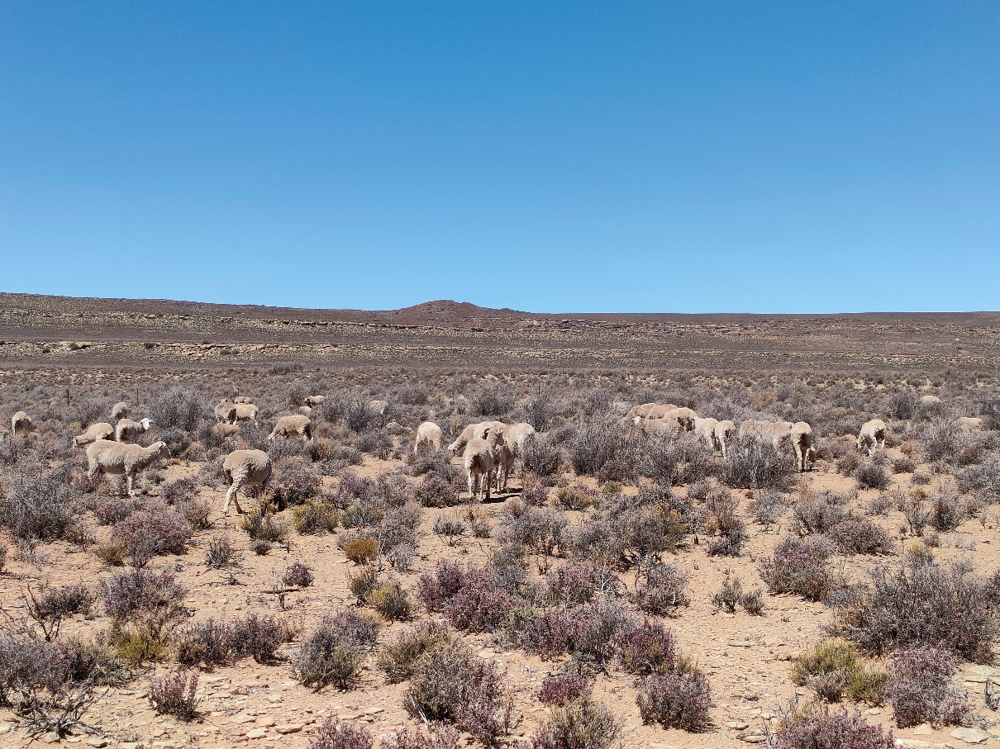
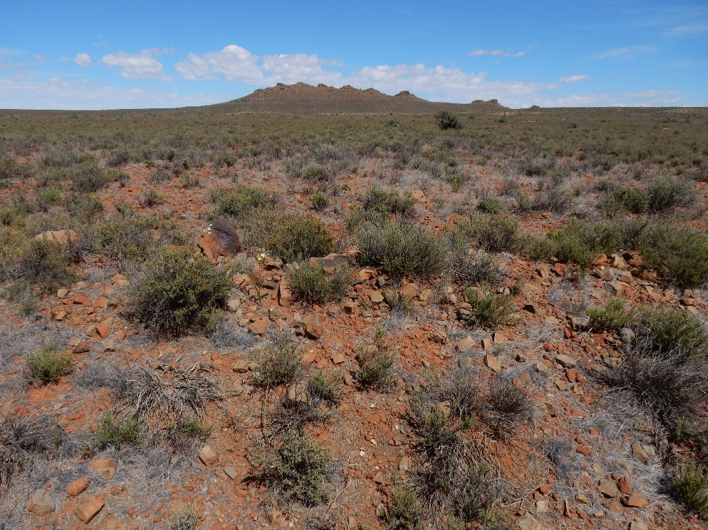
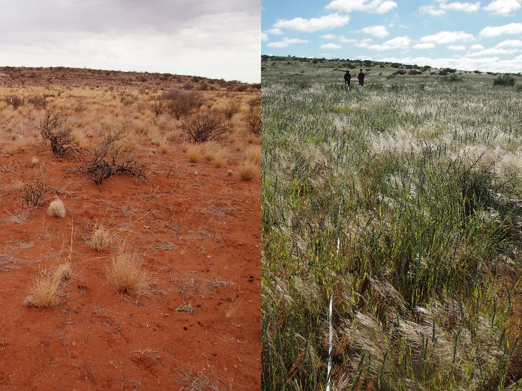
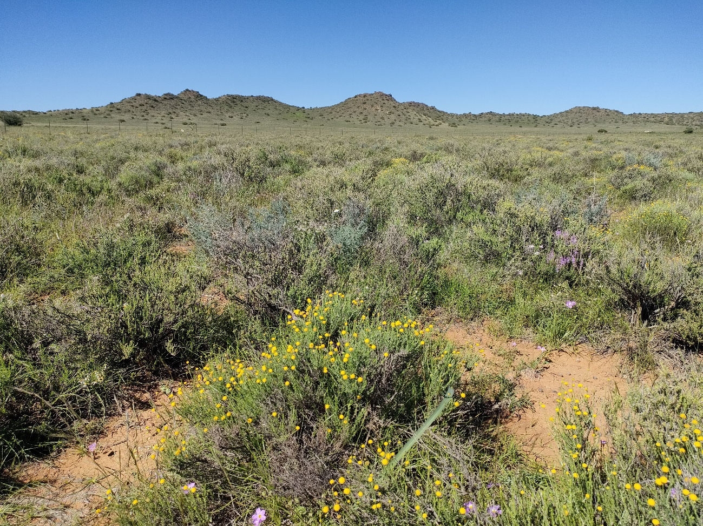
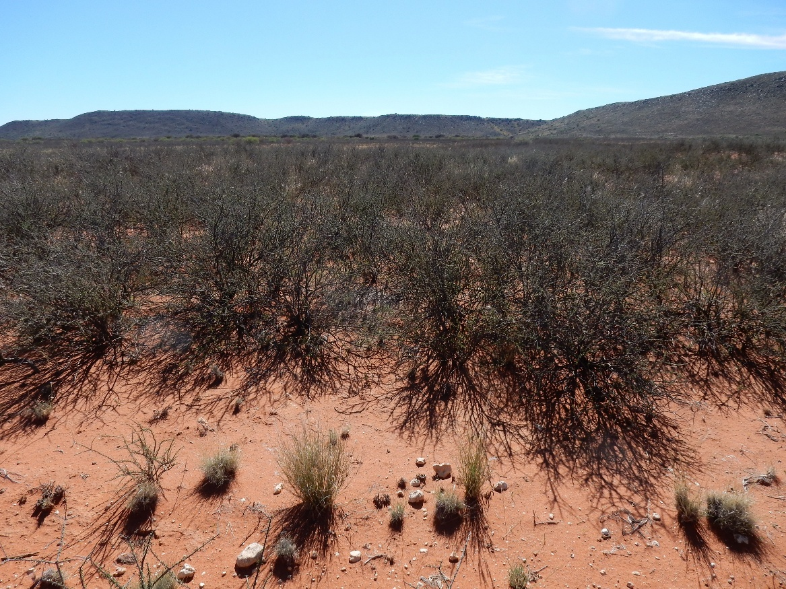
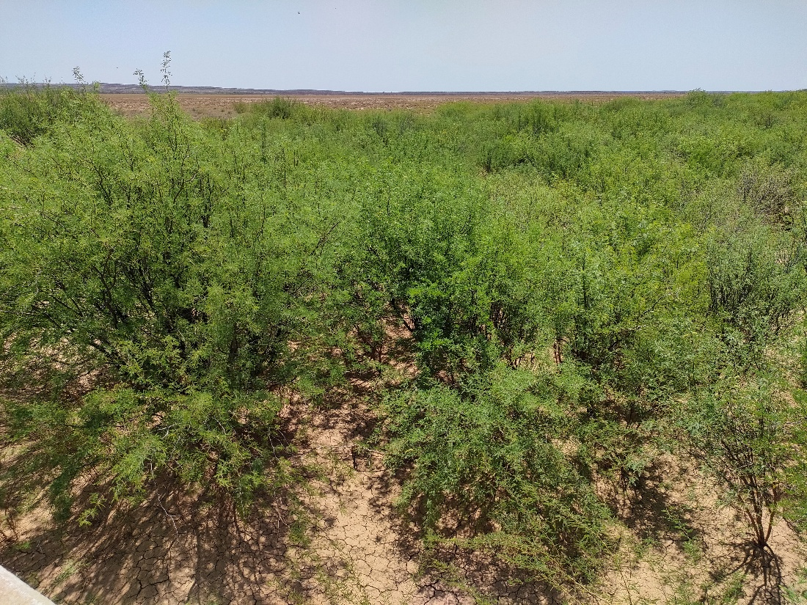
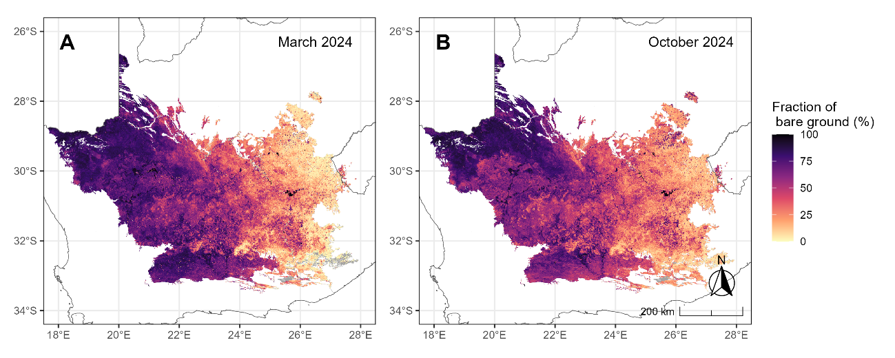
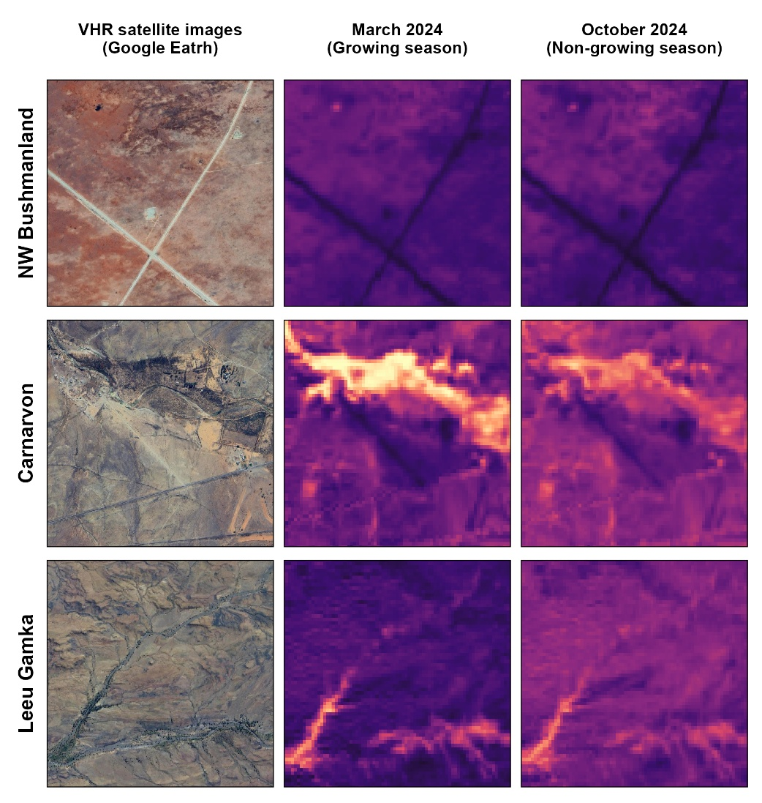

Nama Karoo
Wataru Tokura ![]()
Stephni van der Merwe
Ecological context
Vegetation units
The Nama-Karoo biome is located in the western inland of South Africa, covering approximately 20% of the country’s land area. Being a water-limited, semi-arid to arid environment (70–500 mm annual rainfall), ecological dynamics in the biome are strongly regulated by erratic rainfall, most of which falls during the late summer months. A sparse mix of dwarf shrub and grass species adapted to harsh conditions is typical of the vegetation in the biome, while considerable variation in vegetation cover, structure, and composition occurs across the biome1,2. Most of the land is used as rangeland, particularly for sheep farming by commercial farmers for more than a century3. Three broad bioregions are recognised in the biome, largely corresponding to topographic and geological features.

Lower Karoo
The Lower Karoo occurs in the lowlands (~300–1,000 m) south of the Great Escarpment. Intact rangelands in the Lower Karoo are characterised by a diverse mixture of dwarf shrubs and perennial grasses, including palatable species2. These systems respond to seasonal and interannual rainfall fluctuations, representing dynamic yet generally resilient systems with varying vegetation cover and structure. Woodland occurs locally along seasonal river lines.
Degraded rangelands are characterised by increased bare patches, reduced vegetation cover, and dominance of unpalatable species, often resulting from selective grazing and trampling by livestock2. These impacts may appear as contrasts across fence lines or near water points. However, it is often difficult to distinguish grazing-induced degradation from natural variation. In the drier parts of the bioregion, rainfall fluctuations have a stronger influence on vegetation dynamics, and the impacts of excessive grazing may be weak or difficult to detect in a single temporal snapshot4.
Upper Karoo
The Upper Karoo occurs on the uplands (~1,000–1,900 m) north of the Great Escarpment. The landscape is characterised by koppies scattered across extensive flat plains. Similar to the Lower Karoo, intact rangelands are characterised by a diverse mixture of shrub and perennial grass species that naturally fluctuate with rainfall variability2.
Degraded rangelands are characterised by increased bare patches, reduced vegetation cover, and dominance of unpalatable species. In susceptible areas, reductions in vegetation cover may also increase soil erosion risk. In some regions, dominance by woody shrub species such as Rhigozum trichotomum is perceived as a legacy effect of historical grazing, although the underlying mechanisms remain poorly understood.

Bushmanland
Bushmanland occurs in the northernmost part of the biome. It represents the harshest environment among the three bioregions, with lower and less predictable rainfall and higher mean temperatures. Relatively little field-based information is available for this bioregion. Like the other bioregions in the biome, intact vegetation is typically grassy dwarf shrubland dominated by drought-adapted species, including Stipagrostis species. However, vegetation structure is also strongly influenced by biophysical factors such as landforms, soil depth, and soil properties1.
Although evidence is limited, degraded rangelands in Bushmanland likely share similar diagnostic characteristics with those in other bioregions2.. In addition to grazing-induced changes, riverine habitats are often affected by invasive woody plants such as Prosopis spp., which transform vegetation structure by forming dense stands along drainage lines5. Similarly, increased woody cover by Rhigozum trichotomum and Senegalia mellifera is associated with degraded rangelands6.

Key pressures
The Nama-Karoo biome has experienced relatively limited large-scale land-use change, with approximately 98% of the biome remaining classified as natural extent7. This is substantially higher than the national average (78%), indicating that declining ecological condition in the biome is generally not associated with conversion to cropland, urban development, or mining. Instead, degradation is more often associated with subtle changes in vegetation composition and structure within natural rangelands.
Overuse of rangelands
The long history of grazing in the biome has shaped agricultural policy and degradation research in South Africa3,6. Karoo vegetation is generally considered adapted to grazing pressure because it evolved alongside indigenous herbivores. However, debates continue regarding how to evaluate the ecological effects of continuous sheep grazing relative to historical baseline conditions prior to European settlement.
Overuse of rangelands may lead to declining vegetation cover, shifts from palatable to less palatable species, replacement of perennial species by short-lived species, and increases in bare ground. These changes may further increase susceptibility to soil erosion. Note that soil erosion may also have been initiated by historical crop production or infrastructure development, which removed topsoil, with the resulting scars still visible in parts of the biome. Interpreting degradation patterns is complicated by strong rainfall variability, because increases in vegetation cover may reflect favourable rainfall conditions rather than ecological recovery2,8.

Woody encroachment
Woody encroachment has been reported across parts of the biome, although recent updates on its extent remain limited. Increased canopy cover of tall woody shrub species such as Senegalia mellifera and Rhigozum trichotomum is commonly observed. Encroachment is widely perceived to be associated with historical grazing pressure, although the underlying ecological mechanisms are not fully understood. Woody encroachment may reduce grazing capacity and alter vegetation structure, with cascading effects on biodiversity, soil properties, and carbon storage.

Invasive alien species
Alien plant species richness in the Nama-Karoo biome is relatively low, although Prosopis spp. are notable because of their invasiveness, extent, and ecological impacts. Among several species and hybrids, P. velutina and P. glandulosa var. torreyana are of particular concern.
The impacts of Prosopis spp. on ecosystem services and biodiversity are well documented. Dense stands with deep root systems may contribute to groundwater depletion through high water use. From a rangeland management perspective, Prosopis reduces forage availability by outcompeting indigenous species and limiting accessibility through dense thicket formation. Negative effects on biodiversity, including impacts on plants, insects, and birds, have also been documented, as these species can transform open shrublands into thicket-like vegetation9. Despite these impacts, Prosopis species also provide benefits to people, including fodder, fuelwood, and shade.

Climate change
Climate change is expected to interact with existing pressures in the Nama-Karoo biome by altering rainfall variability, increasing drought frequency, and intensifying temperature extremes. These changes may further complicate efforts to distinguish natural variability from long-term ecological degradation.
Potential remote sensing approaches
1. Overuse of rangelands
Overuse of rangelands can potentially be monitored through two complementary approaches: 1) mapping degradation symptoms and 2) estimating grazing pressure. Symptoms such as increased bare ground, reduced vegetation cover, and changes in plant functional types may potentially be inferred using satellite remote sensing. In contrast, direct estimation of grazing pressure from remote sensing remains challenging.
a. Mapping degradation symptoms
Arid and semi-arid rangelands have historically been challenging environments for remote sensing because indices such as NDVI perform poorly in sparsely vegetated drylands. However, recent advances in remote sensing approaches have improved the operational monitoring of degradation indicators.
Methods for identifying bare ground and estimating vegetation cover are now relatively established, and large-scale mapping of vegetation life-form classes is increasingly feasible, although it generally requires large training datasets. In contrast, mapping species composition directly from satellite imagery remains challenging.
The effectiveness of remote sensing-based assessments depends on the ecological relevance of the selected degradation indicators (e.g., vegetation cover, bare ground, or life-form composition), the accuracy of the predictions, and the correspondence between the indicators and degradation processes. Another major challenge is accounting for climatic variability in these arid systems. Rainfall variability is typically analysed using long-term time-series data to separate degradation signals from short-term climatic fluctuations. Ground validation and contextual interpretation remain essential for reliable assessments.
Existing products and datasets
Several products for estimating bare surface cover are available, although many provide binary outputs and may therefore have limited utility for detecting subtle changes. Detailed functional-type mapping products are not yet available for South Africa. Fractional cover products derived from spectral unmixing approaches, such as the Digital Earth Africa Fractional Cover product, may offer useful alternatives, although their applicability in the Nama-Karoo biome r
b. Mapping grazing pressure
Livestock numbers may serve as a proxy for grazing pressure.
Existing products and datasets
Global satellite-derived livestock density datasets are available, such as the Gridded Livestock of the World (GLW4) dataset. However, their accuracy in South Africa has not been comprehensively evaluated. Alternative data sources, including agricultural census statistics or locally calibrated livestock datasets, may provide more reliable estimates3.
2. Woody encroachment
Satellite remote sensing offers considerable potential for monitoring woody encroachment in the Nama-Karoo biome. Approaches for mapping woody cover from satellite imagery are relatively well established. Rangeland degradation associated with increasing cover of tall woody shrubs can potentially be quantified using time-series analyses of woody vegetation cover.
Existing products and datasets
Several global and regional woody cover products are available. However, most models were not specifically developed for arid shrublands, and their accuracy and spatial resolution vary substantially. Evaluating the suitability and accuracy of these products for Nama-Karoo vegetation remains important.
3. Invasive alien species
Satellite remote sensing offers potential for identifying areas infested by problematic invasive alien species in the Nama-Karoo biome. The cover and extent of Prosopis spp. can represent degraded rangeland and riverine habitat associated with invasive alien plants. Prosopis stands may produce distinct spectral signatures relative to surrounding open shrublands, although distinguishing them from indigenous woody species such as Vachellia karroo can be difficult using multispectral imagery alone.
Existing products and datasets
Several efforts have focused on mapping Prosopis spp. using remote sensing in the Nama-Karoo biome5. More recently, national-scale mapping products for major invasive alien plants, including Prosopis spp., have become available10.
Developing a Fractional Bare Ground product using ground-level photographs
Note: The findings of this case study are being prepared as a manuscript by Tokura et al. in prep.
Background
The fraction of bare ground was identified as a key metric representing rangeland overuse in the Nama-Karoo biome, with strong potential for estimation using remote sensing approaches. One of the major challenges is sourcing a representative dataset for model training in this temporally variable and spatially extensive biome. To address this challenge, we derived estimates of bare ground fraction from approximately 1,000 ground-level photographs taken between 2014 and 2024 across various locations within the biome.
Methods
Prediction models were developed separately for the growing season (January to April) and the non-growing season (May to December) to account for seasonal variation. The fraction of bare ground estimated from the ground-level photographs was split into training and validation datasets using 80:20 ratio. In addition, independent validation data were obtained from 52 transect plots to further assess model performance. Three algorithms, two preprocessing methods, and different sets of predictor variables were evaluated, and the best-performing combinations were selected. The response variable was the fraction of bare ground estimated from the ground-level photographs, while predictors included 13 vegetation indices (e.g., NDVI, EVI, SAVI) and ancillary environmental variables.
Results
Among the models developed, Partial Least Squares beta regression achieved consistently strong predictive performance. The resulting maps reflected known gradients in vegetation cover, revealing spatially and temporally variable patterns across the biome (Figure 1). Key landscape features were clearly represented in the prediction maps, supporting the overall validity of this modelling approach (Figure 2).


Next steps
The modelling outcomes provide important insights into ecological dynamics in the biome. However, the predicted bare ground fraction should not be directly interpreted as an indicator of degradation severity, as it is also influenced by rainfall variability and other abiotic factors such as landforms and soil properties.
We are currently exploring an approach to link field-observed symptoms of rangeland degradation to phenological metrics derived from time-series bare ground fraction. Preliminary analyses suggest that field-observed degradation scores are largely associated with lower perennial vegetation cover and higher cover of species indicative of ecological disturbance. Higher quantiles of bare ground correspond with reduced perennial cover, but not with disturbance. These findings highlight both the potential and the limitations of this approach.